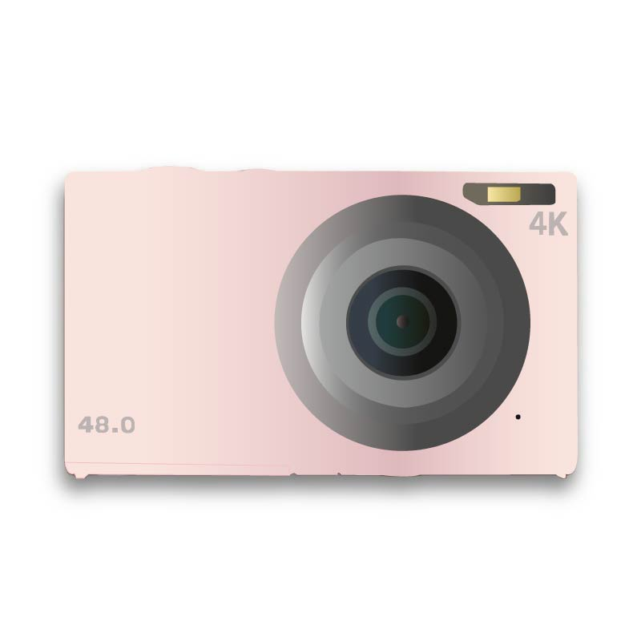

Vectorieel Tekenen
Vectorieel tekenen is een tekentechniek waarbij een object gedeeltelijk in doorsnede wordt weergegeven, zodat zowel de buitenkant als de interne structuur duidelijk zichtbaar zijn.
Onze werken;

